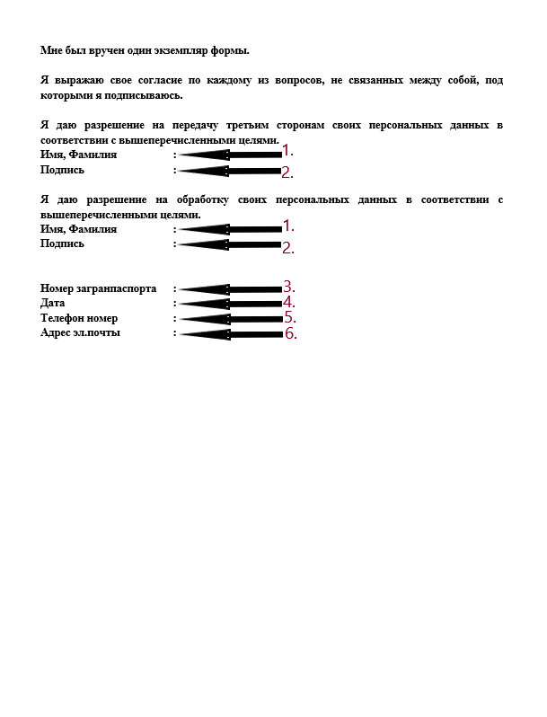
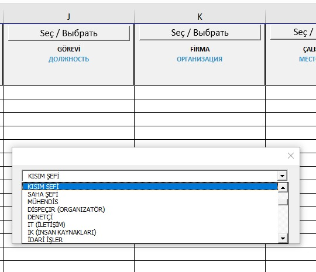

Saha giriş onayı alınması için (ziyaretçi ya da sürekli çalışanlar için aynı prosedür geçerlidir), iki aşamalı bir süreç uygulanmaktadır.
1. Aşama:
Şirket yöneticisi veya yetkili kişi tarafından imzalanmış (vekaletname ile) ve Güvenlik Direktörü Artem Zarodysh ve
Güvenlik Eş Direktörü Selim Temren’indikkatine yazılmış resmi mektup onayı gerekmektedir.
2. Aşama:
Onayın ardından, aşağıda listelenen belgeler tarafımıza id@t2ic.com e-posta adresi üzerinden gönderilmelidir:
• Pasaport Taraması (Tüm Sayfalar, PDF formatında)
• Diploma/Sertifika
• Eğer mevcutsa mavi kimlik taraması, yoksa:
- Çalışma izni başvurusu ve ekran görüntüsü, yoksa:
- Görevlendirme ve çalışma defteri / Personelin Firmada Çalıştığını Kanıtlayan Belge
• Sahada Dikkat Edilecek Hususlar İle İlgili Bilgilendirme
• Sahaya Girişe İlişkin Açık Rıza Formu
• Personel Giriş Excel tablosu (Eksiksiz ve talimatlara uygun doldurulmalıdır)
NOT: Görevlendirmeli personeller için kart veya geçiş süresi, görevlendirme süresi kadar olacaktır.
Fiziksel evrak teslimi gerekli değildir.
Belgelerin doğru sıralama ve isimlendirme kurallarına uygun olması önemlidir. Bu, belgelerin işleme alınma sürecini hızlandıracaktır. Belgeleri,
pasaporttaki gibi ad-soyad ile büyük harflerle isimlendirip, her bir kişi için ayrı dosyalar oluşturmalısınız. Evraklarınızı pasaport numarası
ile isimlendirip, 7Z zip formatında ve PDF dosyası olarak göndermeniz rica olunur.
NOT: Personel sayısı birden fazla ise belgeleri dosya ismi ile isimlendirmesi gerekmektedir. Örneğin, bütün pasaport taramaları "PASAPORT" adında
tek bir dosya içinde olmalıdır.
Örneğin: KARINA SAZANOVA dosyasında:
KARINA SAZANOVA PASAPORT
KARINA SAZANOVA AÇIK RIZA
KARINA SAZANOVA YASAKLI FALIYETLER
ÖNEMLİ: Eğer personel başka bir firmadan geliyorsa, geldiği firma ile sahadaki bir firmanın sözleşmesi de
eklenmelidir (ilk ve son sayfa).
• Ayrıca, sağlık takip formu olmadan maksimum 5 iş günü ziyaretçi girişi verilebilir. Daha uzun süreli girişler için, subcontractor@t2ic.com
adresiyle iletişime geçilmelidir.
Akkuyu Nükleer Güç Santrali (“NGS”) Sahasına Giriş İçin Yapılacak İşlemler Kapsamında Açık Rıza Beyanı
Bu belge, veri sorumlusu ve veri işleyen sıfatıyla,
Akkuyu Nükleer Güç Santrali sahasına giriş için yapılacak işlemler çerçevesinde, kişisel verilerin kaydedilmesi, saklanması, güncellenmesi, sınıflandırılması ve
işlenmesini; ayrıca ilgili mevzuatın izin verdiği hallerde, açık rıza gösterilmesi durumunda üçüncü kişilere açıklanmasını ve devredilmesini kabul ve beyan eder.
1. Belge toplamda 2 sayfadan oluşur.
- İlk sayfada, ok ile işaretlenen alana personelin Adı ve Soyadı yazılmalıdır.

2. İkinci sayfa, personelin kişisel bilgilerinin ve imzasının bulunduğu alanlar içerir:
- 1. numaralı ok ile işaretlenen iki alana, personelin Adı Soyadı yazılmalıdır.
- 2. numaralı ok ile işaretlenen iki alana, personel tarafından imza atılmalıdır.
- 3. numaralı ok ile işaretlenen alana, personelin TC Kimlik Numarası yazılmalıdır.
- 4. numaralı ok ile işaretlenen alana, belgenin hazırlandığı tarih yazılmalıdır.
- 5. numaralı ok ile işaretlenen alana, personelin telefon numarası yazılmalıdır.
- 6. numaralı ok ile işaretlenen alana, personelin e-posta adresi yazılmalıdır.

Akkuyu Nükleer Güç Santrali (“NGS”) sahasında uyulması gereken kurallara dair belge ile ilgili bilgiler aşağıdaki gibidir:
Belge iki kısımdan oluşur ve her iki kısımda da aynı bilgiler doldurulacaktır:
• "Adı Soyadı" (1. numaralı ok ile işaretli alan): Personelin adı ve soyadı bu alanlara yazılmalıdır.
• "TC/PAS Nu" (2. numaralı ok ile işaretli alan): Personelin TC Kimlik Numarası veya Pasaport Numarası (TC vatandaşı değilse) yazılmalıdır.
• "Firma" (3. numaralı ok ile işaretli alan): Personelin görev yapacağı firmanın adı eksiksiz ve doğru bir şekilde bu alanlara yazılmalıdır.
• "Okudum, anladım." (4. numaralı ok ile işaretli alan): Bu alanlara belgenin doldurulduğu tarih yazılacak ve personel imzasını atmalıdır.


Pasaport belgenizin ön ve arka yüzünün, yandaki görselde gösterildiği gibi alt alta ve net olacak şekilde bir kopyası (fotokopi)
veya taraması gerekmektedir. Bu taramada, her iki yüz de net olmalı, herhangi bir bulanıklık veya gölge olmamalıdır, böylece pasaport
bilgileri kolayca okunabilir.
Son mezun olunan okuldan teslim alınan diploma belgesinin PDF formatında taranmış bir kopyası gerekmektedir.
Eğer çalışan görevlendirme yazısı ile gelmiş ise, yetkili kişi tarafından imzalanmış ve kaşelenmiş bir görevlendirme belgesi ile birlikte, çalışanın bu işyerinde istihdam edildiğini doğrulayan iş sözleşmesi veya çalışma defteri gönderilmelidir.
Akkuyu Nükleer A.Ş. Şantiye Sahasına Giriş Yapan Personelin İkamet Bilgileri Hakkında
Akkuyu Nükleer A.Ş. şantiye sahasına giriş yapan personelin güvenlik soruşturmalarının Enerji Bakanlığı tarafından gerçekleştirilebilmesi
için, personelin ikamet adreslerinin tarafımıza bildirilmesi zorunludur. Giriş kartları, bu listelere göre çalışanlara teslim edilecek olup,
bildirilmemiş olanlar için Akkuyu Nükleer A.Ş. tarafından kart teslimi yapılmayacağını önemle bildiririz.
Bakanlık evraklarını kontrol amacıyla tarafımıza iletirken, eğer personelin ikamet adresi henüz belirlenmemişse ya da değişebilir bir durumda
ise, saha giriş kart talebinde bulunurken ikamet bilgilerini güncellemeniz ya da eklemeniz MUTLAKA gerekmektedir.
Akkuyu Nükleer A.Ş. şantiye sahasında çalışacak personelin veri girişine yönelik eklenen sütunlar ve kullanım talimatları şu şekildedir:
• Personel giriş tablosunda, zorunlu olarak seçim yapılması gereken sütunlar mevcuttur. Bu sütunlarda seçim yapmak için Seç/Выбрать
butonuna tıklamanız gerekmektedir. Bu alanlara manuel olarak veri girişi yapılamaz ve kopyalanmış bir metin yapıştırılamaz. Bu sütunlar boş
bırakılamaz ve seçenek dışındaki bir veri kabul edilemez.
• Seç/Выбрать butonu bulunmayan sütunlar ise manuel olarak doldurulmalıdır. Bu sütunlardaki tüm bilgiler büyük Latin harfleriyle yazılmalıdır.

Seçilen Veriyi İlgili Sütuna Yapıştırma Talimatı:
• Sütundaki ilgili satır veya satırları seçmek için mouse imlecini kullanarak seçim yapın.
• Açılan pencerede “Seçili Hücrelere Görevi Ekle” butonuna tıklayın. Seçilen veri, seçilen satırlara eklenir. Ne kadar satır seçilirse,
o kadar satıra veri eklenir.

Girilen Veriyi Silme Talimatı:
• İlgili sütundaki veriyi silmek için “Seçili Hücreyi Temizle” butonuna tıklayın.

• DELETE komutuyla silme işlemi yapılamaz. DELETE komutuyla silme girişiminde uyarı mesajı alınır.

Veri Değişikliği Talimatı:
• İlgili veri üzerinde değişiklik yapmak için Seç/Выбрать
butonuna tıklayıp yeni bilgiyi seçin. Ardından “Seçili Hücrelere Görevi Ekle” butonuna tıklayarak değişiklikleri tamamlayın.

Tablonun En Sonuna Eklenen Yeni Sütunlar:
R sütunu: Personelin Akkuyu’da çalışırken Türkiye Cumhuriyeti topraklarında ikamet ettiği yer. Bakanlık evraklarının
kontrolünde bu sütunun doldurulması zorunlu değildir, ancak fiziki kart talebinde bulunurken bu alan doldurulmalıdır.
Boş bırakılamaz ve personel Mersin il sınırı içerisinde yaşıyorsa, ilgili ikamet adresi seçilmelidir. Mersin il sınırları
dışında yaşıyorsa “Mersin’de ikamet etmiyor” seçeneği kullanılmalıdır.


S sütunu:Yabancı personel için çalışma izni başvuru numarası veya mavi kimlik numarası (99 ile başlayan kimlik) girilmelidir.
Türk personeller veya görevlendirme ile saha ziyareti gerçekleştiren personeller için bu sütun doldurulması zorunlu değildir.

T sütunu:Çalışma izni başvurusu yapılmışsa yabancı personel için bu sütun doldurulmalıdır. Fiziki kimlik mevcutsa doldurulmaz.
Türk personeller ve saha ziyareti gerçekleştiren görevliler için doldurulması zorunlu değildir.

Doldurulacak Diğer Alanlar:
1. Geliş Tarihi: Evrakların hazırlandığı tarih.
2. Talep Eden: Firmanın personel sorumlusunun adı soyadı.
3. Talep Eden İletişim Bilgileri: Firmanın personel sorumlusunun cep telefon numarası.
4. Ad: Firmada göreve başlayacak personelin adı.
5. Soyad: Firmada göreve başlayacak personelin soyadı.
6. TC/PAS: Personelin kimlik veya pasaport numarası.
7. Baba Adı: Yabancı personeller için baba adı.
8. Doğum Yeri: Personelin doğum yeri.
9. Doğum Tarihi: Personelin doğum tarihi.

10. Görevi: Personelin görev bilgisi.
11. Firma: Personelin çalışacağı firma bilgisi.
NOT: Eğer firma listede yoksa bizimle iletişime geçin.
12. Çalıştığı Yer: Personelin görev yapacağı yer.
13. Cinsiyet: Personelin cinsiyet bilgisi.
14. Çalışan Telefon Numarası: Personelin telefon numarası.
15. Çalışan Yakını Telefon Numarası: Personelin yakınının telefon numarası.
16. Adli Sicil Kaydı ve Sağlık Kısıtlamaları: Personelin varsa adli sicil kayıt ve sağlık kısıtlamaları.
17. Uyruk: Personelin uyruk bilgisi.
NOT: Tüm alanlar talimatlara uygun olarak eksiksiz doldurulmalıdır.

Akkuyu NGS inşaat alanına giriş izni ve personel giriş kartlarının düzenlenmesi için, şirket yöneticisi veya yetkili kişi tarafından imzalanmış (vekaletname ile) ve
Güvenlik Direktörü Artem Zarodysh ve Güvenlik Eş Direktörü Selim Temren’in dikkatine yazılmış bir yazı gereklidir. Bu yazı, gerekli mektup ekleriyle
birlikte aşağıdaki adımlar izlenerek gönderilmelidir:
1. Yazının Gönderimi:
Güvenlik Direktörü Artem Zarodysh ve Güvenlik Eş Direktörü Selim Temren’e hitaben yazılan yazı, office@t2ic.com adresine iletilmelidir.
2. Belgelerin Kontrolü:
Resmi yazı ve ekleri, yabancı personeller için id@t2ic.com , Türk personeller için muge.dundar@t2ic.com ve hafize.isin@t2ic.com
e-posta adreslerine gönderilmelidir.
3. Personel Listesi Tablosu:
• Tablo, şirket yöneticisi veya yetkili kişi tarafından kaşe ve imzalanmış olmalıdır.
• Tablo, ekli belgelerde yer alan personel isimleriyle birebir eşleşmelidir. Aksi takdirde, belgeler işleme alınmayacaktır.
Bu süreçlerin eksiksiz ve doğru bir şekilde tamamlanması, giriş izni ve kart düzenlemeleri için zorunludur.